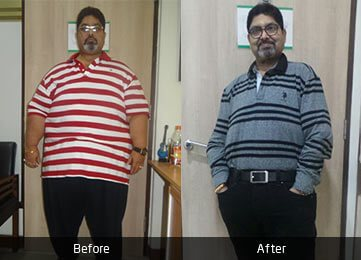

Global Success Stories
Join thousands of patients worldwide who chose Dr. Peters for their life-changing transformation.

Larai's Transformation
"Coming from Nigeria was scary at first, but the team treated me like family. The airport pickup, hotel, hospital — everything was seamless. 42 kgs down in 6 months."

Mahesh's Journey
"Reclaiming life with bariatric surgery. Dr. Peters and his team gave me a second chance at health. Forever grateful for the care and attention I received."

Pinky's Transformation
"Confidence restored through expert care. Diabetes resolved and 48 kgs lighter — Pinky is now off all medications and living her best life."

Sunil's Experience
"Overcoming metabolic challenges safely. New lease on life — 72 kgs down, sleep apnea resolved, energy restored. Thank you Dr. Peters!"